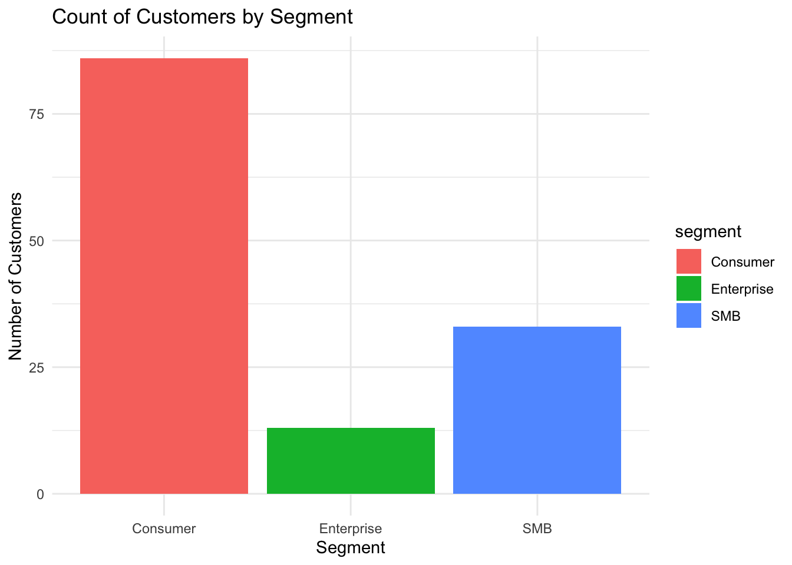
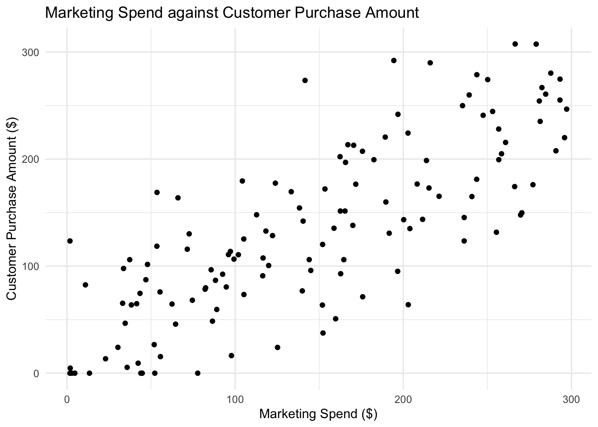

This report investigates if increased personalised marketing campaign spend per customer leads to higher purchase amounts. Understanding this relationship between marketing spend and customer purchase amounts is crucial for evaluating the effectiveness of investment and return on marketing efforts. The findings from this report can inform future budget allocations around marketing strategies.
Research Question
This report aims to investigate whether increased marketing spend per customer leads to higher purchase amounts. The relationship between these two variables will be analysed by utilising customer-level data from a personalised marketing campaign, including marketing spend and recorded customer purchase amounts.
Dataset Introduction
The dataset contains records of customer-level data from a personalised marketing campaign. The dataset consists of amount spent on marketing per customer, the number of times the customer visited the platform, the purchase amounts of each customer and each customer’s sign-up dates. The customers are classified into segments (Consumer, SMB, Enterprise) to reflect different market types and the notes variable provides information about each customer’s marketing interactions.
Cleaning Process
The raw dataset contained lots of “N/A” and empty null values; these were converted to NA to ensure consistency across variables. The raw dataset also contained inconsistent date formats; these were standardised and converted into a consistent date format across all rows. Categorical variables, such as segment and notes, were converted to factor types to properly represent their categorical nature. Rows with missing customer purchase amount values were removed from the dataset as unknown purchase amounts would not be useful for this analysis. The cleaning process ensures that the final dataset is consistent and complete for meaningful statistical analysis of the relationship between marketing spend and customer purchase amounts.
Dataset Description
The processed dataset contains:
customer_id: a unique customer identifier
marketing_spend: a numeric variable representing the amount spent on the marketing for the given customer
visit: a numeric variable representing the number of times the given customer visited the platform
purchase_amount: a numeric variable representing the amount spent by the customer
signup_date: a date variable representing the date the customer signed up to the platform
segment: a categorical variable classifying the customer as a Consumer, SMB, or Enterprise
notes: a categorical variable representing customer response to marketing outreach
There are 7 variables and 132 observations in the cleaned dataset.
# Get summary statistics of the numeric variablesclean_customer_data %>%select(marketing_spend, visits, purchase_amount) %>%sumtable(title =NA)
Table 1: Summary statistics of numeric variables (marketing spend, visits, purchase amount) in the dataset
Variable
N
Mean
Std. Dev.
Min
Pctl. 25
Pctl. 75
Max
marketing_spend
132
148
86
1.8
74
215
297
visits
132
6.1
2.8
1
4
8
14
purchase_amount
132
135
82
0
76
199
307
Table 1 shows the summary statistics of the numeric variables in the dataset. From Table 1, it appears that the variables, marketing_spend and purchase_amount, are highly variable, with ranges spanning from $1.8 to $297 and $0 to $307, respectively, which will allow the analysis to capture the extremes of the relationship between the two variables. The average amount spent on marketing per customer is $148, with most marketing campaigns spending between $74 and $215, and the average customer purchase amount is $135, with most customers spending between $76 and $199. The visits variable shows less variability with a mean of 6.1 and most customers visiting the platform between 4 to 8 times.
Table 1 provides insights on the distribution of the numeric variables of the data, showing average values, ranges and potential outliers, which can be useful for the interpretation of results later on in the analysis.
# Plot the count of customers in each segment as a bar chartggplot(clean_customer_data, aes(x = segment)) +geom_bar() +labs(x ="Segment",y ="Count of Customers",title ="Count of Customers by segment") +theme_minimal()

Figure 1: Number of customers in each different segment (Consumer, Enterprise, SMB) in the data
Figure 1 is a bar chart which shows that the observations in this data mostly consists of Consumer customers, where Enterprise customers contribute the least to this data.
Figure 1 shows how the customers are distributed across the different segments (Consumer, SMB, Enterprise), and provides background on which segments contribute most to this data. This can prove useful later on if the marketing team would like to analyse marketing spend based on each different customer segment.
Results
ggplot(clean_customer_data, aes(x = marketing_spend, y = purchase_amount)) +geom_point() +labs(x ="Marketing Spend ($)", y ="Customer Purchase Amount ($)",title ="Marketing Spend against Customer Purchase Amount" ) +theme_minimal()

Figure 2: Marketing spend per customer, against each customer’s purchase amount in dollars ($)
Figure 2 shows that there is a strong positive relationship between marketing spend and customer purchase amount. As marketing spend increases, customer purchase amount also tends to increase. There is some variability in the data shown by the dispersion of the points on the plot, but the overall trend is positive. At lower marketing spend on personalised campaigns, most customers make no purchase, or the purchase amount is small. At higher amounts of money spent on personalised marketing campaigns, customer purchases tend to be generally higher. This suggests that higher marketing spend per customer does lead to higher purchase amounts.
Customers with marketing spend amounts below $50 had an average purchase amount of $15.15, whereas customers with marketing spend amounts above $250 had an average purchase amount of $276.72, showing that there is a general upward trend between the two variables. The correlation between marketing spend and customer purchase amount is 0.79. This correlation coefficient is positive and close to 1, indicating a strong positive relationship between the two variables. These statistics further support the conclusion that higher marketing spend per customer leads to higher purchase amounts.